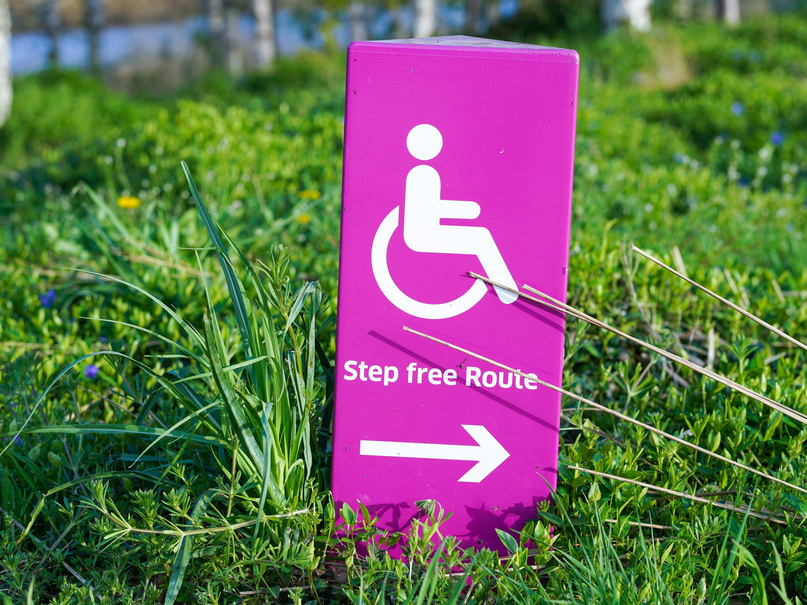

Media Management & ADA Compliance for Developers
Fundamentals for front-end web development using html5.
Quick Summary
So it’s time to get creative with your basic Html webpage format. Let’s get started! Media management is the first place to begin when implementing code that will bring life and vibrancy to your page! You’re no longer limited to plain text. Engage your users and clients with images, special effects, and creative front-end code.
Requirements
- Basic elements and Html "tags" format and structure.
- Understanding of organization code layout, "header, footer, nav, body , div " tags
- Code editor (Visual Studio Code — Recommended)
Introduction
“when you don’t create things, you become defined by your tastes rather than ability. your tastes only narrow & exclude people. so create.” ― Why The Lucky Stiff
Media Tags and Explanation
The tag you would use to add an image to a webpage is img src=”X”. The ‘alt’ attribute is for coding alternative information for an image. The ‘alt’ is important because provides context if there is an error in the ‘src’ of the image, it provides info if the image is not loading due to slow connection, it describes the image to those using a screen reader, and it optimizes search engine accessibility.
The #video and #audio tags are formatted the same with #source #type and ‘controls’ attributes, close and ending tags, both support file format ‘Ogg’. Differences are that #video has ‘height’ and ‘width’ attributes and supports file formats ‘MP4, WebM’. The #audio only supports file formats ‘MP3, Wav’
Example:
img src="https://s3.amazonaws.com/bloc-foo/soda.jpeg" alt='picture of soda' (wrapped in arrow tags of course)
What if my users can’t see, hear, or engage with the Media on my page?
Go to https://webaim.org/ to understand empowerment for developers to make their web content accessible to people with disabilities.
This resource assists coders with the four following to be compliant with regulations for people with disabilities.
Accessibility Training
Whether here in Utah or on-site at your organization, WebAIM can provide web and document training to fit your needs.
Accessible Site Certification
As a respected third party accessibility expert, WebAIM can evaluate and certify your site to established web accessibility guidelines.
Technical Assistance
Need assistance implementing accessibility? WebAIM’s expert staff can provide the assistance you need.
Evaluation and Reporting
We can provide reports to help you know how accessible your site is and how to make it better.
Semantics & Accessibility
Accessibility is very important because is provides web accessible sites to all users who may experience difficulty accessing information on the internet.
Some forms of accessibility related to web development include semantic html, using specific tags that describe all of the content on the website, also using high contrasting colors for those who struggle with color blindness.
Semantic html means using specific tags that describe the code, for example table and form in contrasts to non-semantic tags that don’t require specific format for the text, such as div and span. Semantic html convey meaning of what text is doing inside the tag. Some common accessibility issues my end users may have is reading the text because of blindness, or using excessive clicking and selecting options requiring a high volume of motor skills. Steps to take is providing options for users with screen readers, and reducing amount of tasks to input/request user information. The label tag is used for appropriate accessibility when user may toggle mouse over text and properly connects user to input field.